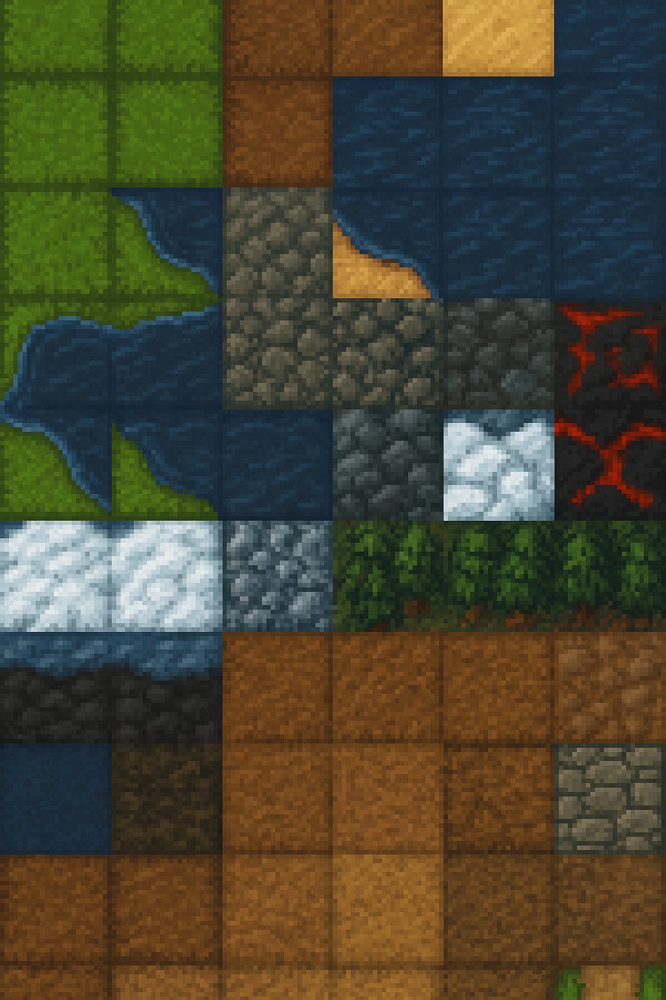

🪙
Gold
100
🪵
Holz
50
Stein
30
🍖
Nahrung
25
Bauen
Bauen

Hauptquartier
Haus
Holzfäller
Steinbruch
Farm
Mühle
✕
Infos
DPR
–
Viewport
–
Canvas
–
Boot
./boot.js (eingebettet)
Map
./assets/maps/map-pro.json
ℹ️ Infos
🗺️ Overlays
⟳ Reload
🎯 Zentrum
FPS: –
Start → BG blendet aus
Siedler‑Mini
Willkommen! Bitte wählen:
Start
Laden
Reset
Vollbild